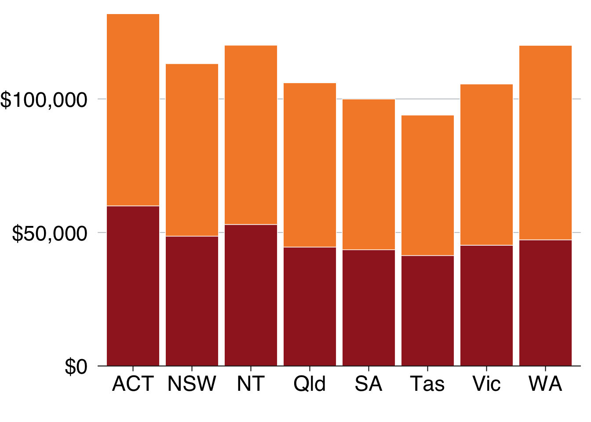
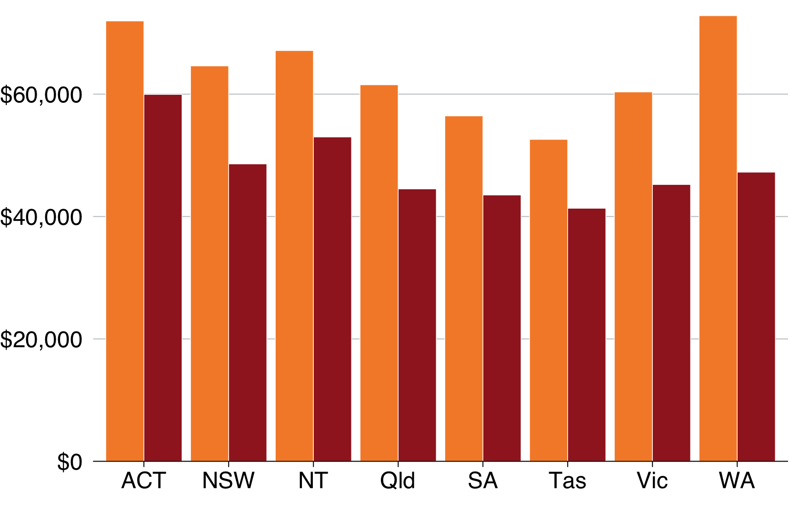
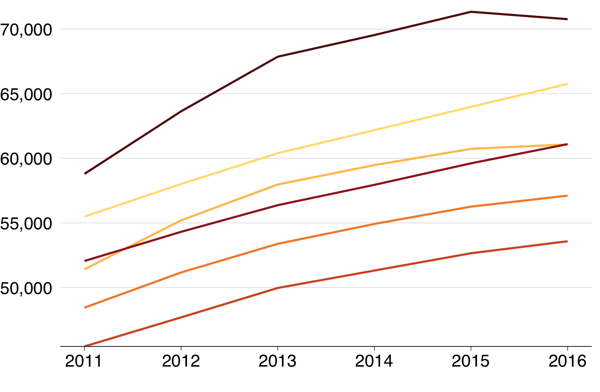
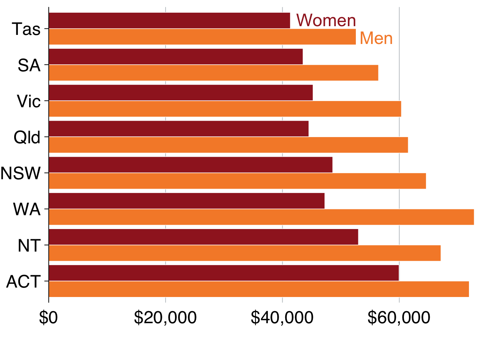
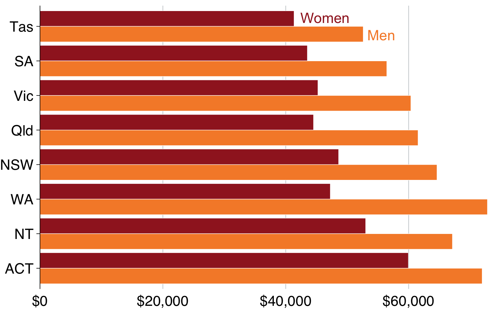
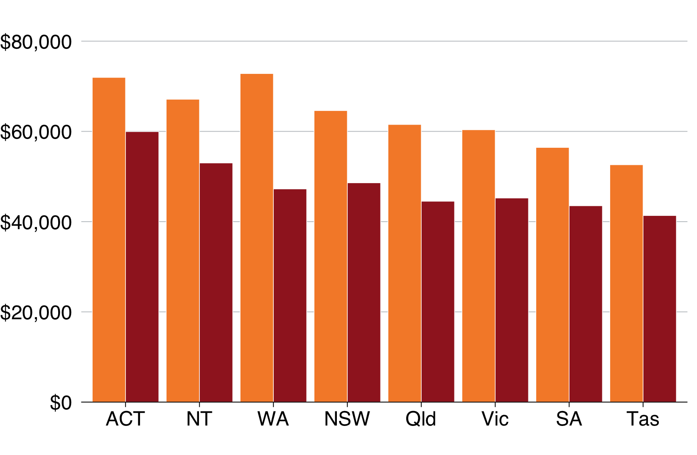
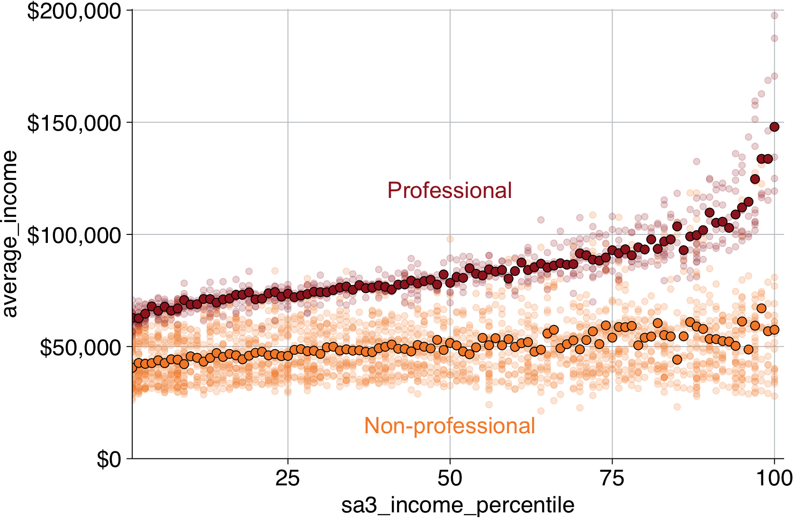
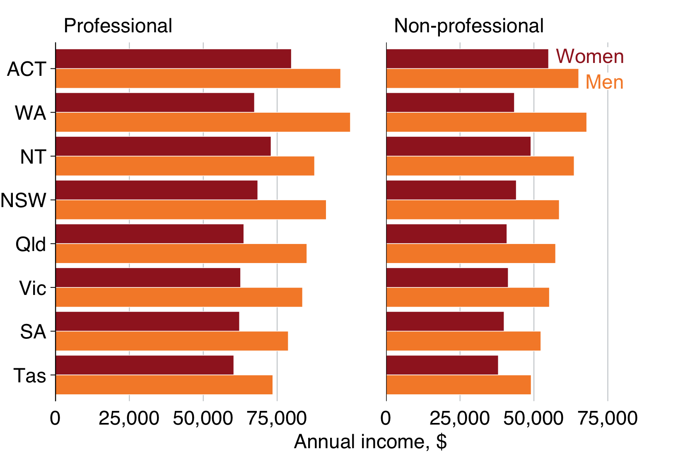

5 Chart cookbook
This section takes you through a few often-used chart types.
5.1 Set up
library(tidyverse)
library(grattantheme)
library(ggrepel)
library(absmapsdata)
library(sf)
library(scales)
library(ggfittext)# note: to be added to grattantheme; remove this when done
grattan_label <- function(..., size = 18) {
.size = size / ggplot2::.pt
geom_label_repel(...,
fill = "white",
label.padding = unit(0.1, "lines"),
label.size = 0,
size = .size)
}The sa3_income dataset will be used for all key examples in this chapter.1 It is a long dataset from the ABS that contains the median income and number of workers by Statistical Area 3, occupation and sex between 2010 and 2015.
sa3_income <- read_csv("data/sa3_income.csv") %>%
filter(!is.na(median_income),
!is.na(average_income))## Parsed with column specification:
## cols(
## sa3 = col_double(),
## sa3_name = col_character(),
## sa3_sqkm = col_double(),
## sa4_name = col_character(),
## gcc_name = col_character(),
## state = col_character(),
## occupation = col_character(),
## occ_short = col_character(),
## gender = col_character(),
## year = col_double(),
## median_income = col_double(),
## average_income = col_double(),
## workers = col_double()
## )## # A tibble: 6 x 13
## sa3 sa3_name sa3_sqkm sa4_name gcc_name state occupation occ_short
## <dbl> <chr> <dbl> <chr> <chr> <chr> <chr> <chr>
## 1 10102 Queanbe… 6511. Capital… Rest of… NSW Clerical … Admin
## 2 10102 Queanbe… 6511. Capital… Rest of… NSW Clerical … Admin
## 3 10102 Queanbe… 6511. Capital… Rest of… NSW Clerical … Admin
## 4 10102 Queanbe… 6511. Capital… Rest of… NSW Clerical … Admin
## 5 10102 Queanbe… 6511. Capital… Rest of… NSW Clerical … Admin
## 6 10102 Queanbe… 6511. Capital… Rest of… NSW Clerical … Admin
## # … with 5 more variables: gender <chr>, year <dbl>, median_income <dbl>,
## # average_income <dbl>, workers <dbl>5.2 Bar charts
Bar charts are made with geom_bar or geom_col. Creating a bar chart will look something like this:
ggplot(data = <data>) +
geom_bar(aes(x = <xvar>, y = <yvar>),
stat = <STAT>,
position = <POSITION>
)It has two key arguments: stat and position.
First, stat defines what kind of operation the function will do on the dataset before plotting. Some options are:
"count", the default: count the number of observations in a particular group, and plot that number. This is useful when you’re using microdata. When this is the case, there is no need for ayaesthetic."sum": sum the values of theyaesthetic."identity": directly report the values of theyaesthetic. This is how PowerPoint and Excel charts work.
You can use geom_col instead, as a shortcut for geom_bar(stat = "identity).
Second, position, dictates how multiple bars occupying the same x-axis position will positioned. The options are:
"stack", the default: bars in the same group are stacked atop one another."dodge": bars in the same group are positioned next to one another."fill": bars in the same group are stacked and all fill to 100 per cent.
First, we’ll take the sa3_income dataset and create a summary table of total workers and income by state, greater capital city area, professional work and gender. We’ll use this base_data throughout this section.
base_data <- sa3_income %>%
filter(!gender == "Persons") %>%
mutate(income = average_income * workers,
prof = if_else(occupation %in% c("Professionals", "Managers"),
"Professional",
"Non-professional"),
prof = factor(prof, levels = c("Professional", "Non-professional"))) %>%
group_by(state, gcc_name, prof, gender) %>%
summarise(workers = sum(workers),
income = sum(income),
average_income = income / workers)Time to create a bar chart!2 You’ll plot average incomes by state and gender, so first thing you’ll do is create the dataset that you want to plot.
data <- base_data %>%
group_by(state, gender) %>%
summarise(average_income = sum(income) / sum(workers))
data## # A tibble: 16 x 3
## # Groups: state [8]
## state gender average_income
## <chr> <chr> <dbl>
## 1 ACT Men 71965.
## 2 ACT Women 59952.
## 3 NSW Men 64612.
## 4 NSW Women 48603.
## 5 NT Men 67125.
## 6 NT Women 53003.
## 7 Qld Men 61531.
## 8 Qld Women 44518.
## 9 SA Men 56444.
## 10 SA Women 43519.
## 11 Tas Men 52608.
## 12 Tas Women 41353.
## 13 Vic Men 60362.
## 14 Vic Women 45236.
## 15 WA Men 72822.
## 16 WA Women 47251.Looks good: you have one observation (row) for each state \(\times\) gender group you want to plot, and a value for their average income. Put state on the x-axis, average_income on the y-axis, and split gender by fill-colour (fill).3
And because you have the actual values you want to plot from your data object, tell geom_bar to ‘just use the number provided’ with stat = "identity":
data %>%
ggplot(aes(x = state, # x-axis is state
y = average_income, # y-axis is income
fill = gender)) + # fill colour is gender
geom_bar(stat = "identity") + # "just use the number that's there"
theme_grattan() +
grattan_y_continuous(labels = dollar) +
grattan_fill_manual(2) +
labs(x = "",
y = "")
Before addressing the accidental stacking, note that there is a short-cut-geom for geom_bar(stat = "identity"): geom_col. Using that instead, without the need for the stat argument gives the same result:
data %>%
ggplot(aes(x = state,
y = average_income,
fill = gender)) +
geom_col() + # no need for stat = "identity"
theme_grattan() +
grattan_y_continuous(labels = dollar) +
grattan_fill_manual(2) +
labs(x = "",
y = "")
The fill aesthetic creates two series – one for women, one for men – and geom_col stacks them by default. You can change this behaviour with the position argument:
data %>%
ggplot(aes(x = state,
y = average_income,
fill = gender)) +
geom_col(position = "dodge") + # dodge instead of stack the series
theme_grattan() +
grattan_y_continuous(labels = dollar) +
grattan_fill_manual(2) +
labs(x = "",
y = "")
You can also order the groups in your chart by a variable. If you want to order states by population, use reorder inside aes:
data %>%
ggplot(aes(x = reorder(state, -average_income), # change the order of state
y = average_income,
fill = gender)) +
geom_col(position = "dodge") +
theme_grattan() +
grattan_y_continuous(labels = dollar) +
grattan_fill_manual(2) +
labs(x = "",
y = "")
To flip the chart – a useful move when you have long labels – add coord_flipped (ie ‘flip coordinates’) and tell theme_grattan that the plot is flipped using flipped = TRUE.
However, while the coordinates have been flipped, the underlying data hasn’t. If you want to refer to the average_income axis, which now lies horizontally, you would still refer to the y axis (eg grattan_y_continuous still refers to your y aesthetic, average_income).
data %>%
ggplot(aes(x = reorder(state, -average_income),
y = average_income,
fill = gender)) +
geom_col(position = "dodge") +
theme_grattan(flipped = TRUE) + # tell theme_grattan of flipping
grattan_y_continuous(labels = dollar) +
grattan_fill_manual(2) +
labs(x = "",
y = "") +
coord_flip() # flip the chart
5.2.1 Labelling bar charts
Labelling charts in the Grattan style means labelling one of each series and letting the reader connect the dots.
First, create a base chart that we’ll use for the next few charts:
bar <- data %>%
ggplot(aes(x = reorder(state, -average_income),
y = average_income,
fill = gender)) +
geom_col(position = position_dodge()) +
theme_grattan(flipped = TRUE) +
grattan_y_continuous(labels = dollar) +
grattan_fill_manual(2) +
labs(x = "",
y = "") +
coord_flip()
bar
You can use grattan_label to label your charts. This function is a ‘wrapper’ around geom_label_repel that has settings that we tend to like: white background with a thin margin, 18-point font, and no border. It takes the standard arguments of geom_label_repel.
Section 4.6 shows how labels are treated like data points: they need to know where to go (x and y) and what to show (label). But if you provide every point to your labelling geom, it will plot every label:
bar +
grattan_label(aes(colour = gender, # colour the text according to gender
label = gender), # label the text according to gender
position = position_dodge(width = 1), # position dodge with width 1
hjust = -0.1) + # horizontally align the label so its outside the bar
grattan_colour_manual(2) # define colour as two grattan colours
To just label one of the plots – ie the first one, Tasmania in this case – we need to tell grattan_label. The easiest way to do this is by creating a label dataset beforehand, like label_gender below. This just includes the observations you want to label:
label_gender <- data %>%
filter(state == "Tas") # just want Tasmania observations
bar +
grattan_label(data = label_gender, # supply the new dataset
aes(colour = gender,
label = gender),
position = position_dodge(width = 1),
hjust = -0.1) +
grattan_colour_manual(2)
Labelling a vertical bar chart is much the same, but you might find yourself with less horizontal space. After creating a new base chart, our previous technique is a bit off:
# Create vertical bar chart
vbar <- data %>%
ggplot(aes(x = reorder(state, -average_income),
y = average_income,
fill = gender)) +
geom_col(position = position_dodge()) +
theme_grattan() +
grattan_y_continuous(labels = dollar) +
grattan_fill_manual(2) +
labs(x = "",
y = "")
# Create label dataset
label_gender <- data %>%
filter(state == "ACT") # just want ACT observations
# Label chart
vbar +
grattan_label(data = label_gender, # supply the new dataset
aes(colour = gender,
label = gender),
position = position_dodge(width = 1),
hjust = 0.5, # centre horizontally
vjust = -.1) + # nudged up a bit
grattan_colour_manual(2)
It might be best to label the bars in empty space above the bars. First, expand the plot area by adding an expand_top argument to grattan_y_continuous:

That gives you a bit of breathing room. Use the same label_gender dataset to place labels above the first state (ACT). Like before, grattan_label is used to plot the labels – given a dataset and the right aesthetics – but you’ll need to tweak some of the settings to get it looking right.
By using nudge_y = Inf, you’re pushing the labels all the way to the top of the plot. Then, direction = "x" says ‘only move the labels horizontally to make sure they’re not overlapping’. Finally, segment.colour = NA turns off the line that connects the label to the data point (you can leave this out and see if you like the look of it!).
# Create label dataset
label_gender <- data %>%
filter(state == "ACT")
# Plot with labels
vbar +
grattan_y_continuous(labels = dollar,
expand_top = 0.07) +
grattan_label(data = label_gender,
aes(colour = gender,
label = gender),
nudge_y = Inf, # move to the top of the plotting area
direction = "x", # automatically align along the x-axis
segment.colour = NA) + # don't add a line to the data point
grattan_colour_manual(2)
There is an alternative approach that can be used in situations that require only a couple of labels. The annotate function will add text to a plot in the place you tell it. It doesn’t require a new dataset, and is more like manually labelling a plot in Powerpoint.
The first argument of annotate is what kind of thing it is: "text". Then set the label text you’d like, eg "label = Men", and where it should go with x and y. Then set the colour, and fiddle with hjust (horizontal alignment) to get your desired placement.
The outcome is close to what we had with grattan_label:
vbar +
grattan_y_continuous(labels = dollar,
expand_top = 0.1) +
annotate("text", label = "Men", # Male label
x = "ACT", y = 75e3,
colour = grattan_orange,
hjust = 1) +
annotate("text", label = "Women", # Female label
x = "NT", y = 75e3,
colour = grattan_red,
hjust = 1)
5.2.2 Facetting bar charts
‘Facetting’ a chart means you create a separate plot for each group. It’s particularly useful in showing differences between groups.
You can ‘facet’ bar charts – and any other chart type – with the facet_grid or facet_wrap commands. The fadcet_wrap tends to give you more control over label placement, so let’s start with that.
First, create a summary dataset of average income by professional employment, state and gender:
data <- base_data %>%
group_by(prof, state, gender) %>%
summarise(average_income = sum(income) / sum(workers))
head(data)## # A tibble: 6 x 4
## # Groups: prof, state [3]
## prof state gender average_income
## <fct> <chr> <chr> <dbl>
## 1 Professional ACT Men 96488.
## 2 Professional ACT Women 79828.
## 3 Professional NSW Men 91624.
## 4 Professional NSW Women 68445.
## 5 Professional NT Men 87666.
## 6 Professional NT Women 72940.Then plot a bar chart, similar to the one you made before, but add facet_wrap to the chain:
data %>%
ggplot(aes(x = reorder(state, average_income),
y = average_income,
fill = gender)) +
geom_col(position = position_dodge()) +
theme_grattan(flipped = TRUE) +
grattan_y_continuous(labels = dollar) +
grattan_fill_manual(2) +
labs(x = "",
y = "") +
coord_flip() +
facet_wrap(prof ~ .) # facet 'prof' around nothing else '.'
Cool! Now you just have to tweak some settings to get the plot looking right on the page:
- Add a black line along
average_income = 0to distinguish the plots. - Then define your ‘breaks’ (the spacing of the axis gridlines and labels) in
grattan_y_continuous. - Add some additional space –
10mm– between the two facet plots withpanel.spacing = unit(10, "mm")in thethemeparameter.4 - Left-align the facet titles with
strip.text = element_text(hjust = 0)5 - We’re a bit tight for space along the bottom, so get rid of the “$” and replace with “comma”, then add that information in the
ylabel.
facet_bar <- data %>%
ggplot(aes(x = reorder(state, average_income),
y = average_income,
fill = gender)) +
geom_col(position = position_dodge()) +
geom_hline(yintercept = 0) + # add a black base line for each facet
theme_grattan(flipped = TRUE) +
grattan_y_continuous(labels = comma, # change to comma
breaks = c(0, 25e3, 50e3, 75e3)) + # define your breaks
grattan_fill_manual(2) +
labs(x = "",
y = "Annual income, $") + # add $ info in y-label
coord_flip() +
theme(panel.spacing = unit(10, "mm"), # add some space between the plots
strip.text = element_text(hjust = 0)) + # left-align facet titles
facet_wrap(prof ~ .)
facet_bar
Finally, we’ll add the women/men labels – by creating a dataset with the labels we want and giving that to grattan_label –
label_data <- data %>%
filter(state == "ACT",
prof == "Non-professional")
facet_bar +
grattan_label(data = label_data, # supply the new dataset
aes(colour = gender,
label = gender),
position = position_dodge(width = 1),
hjust = -.1) +
grattan_colour_manual(2) # define the colour scale
5.3 Line charts
A line chart has one key aesthetic: group. This tells ggplot how to connect individual lines.
First, we’ll take the sa3_income dataset and create a summary table of total workers and income by year, state, greater capital city area, professional work and gender. We’ll use this base_data throughout this section.
You can also add dots for each year by layering geom_point on top of geom_line:
If you wanted to show each state individually, you could facet your chart so that a separate plot was produced for each state:
To tidy this up, we can:
- shorten the years to be “13”, “14”, etc instead of “2013”, “2014”, etc (via the
xaesthetic) - shorten the y-axis labels to “millions” (via the
yaesthetic) - add a black horizontal line at the bottom of each facet
- give the facets a bit of room by adjusting
panel.spacing - define our own x-axis label breaks to just show
13,15and17
5.4 Scatter plots
Scatter plots require x and y aesthetics. These can then be coloured and faceted.
First, create a dataset that we’ll use for scatter plots. Take the population_table dataset and transform it to have one variable for population in 2013, and another for population in 2018:
Then plot it
It looks like the areas with the largest population grew the most between 2013 and 2018. To explore the relationship further, you can add a line-of-best-fit with geom_smooth:
You could colour-code positive and negative changes from within the geom_point aesthetic. Making a change there won’t pass through to the geom_smooth aesthetic, so your line-of-best-fit will apply to all data points.
Like the charts above, you could facet this by state to see if there were any interesting patterns. We’ll filter out ACT and NT because they only have one and two data points (SA4s) in them, respectively.
5.5 Distributions
geom_histogram
geom_density
ggridges::
5.6 Maps
5.6.1 sf objects
[what is]
5.6.2 Using absmapsdata
The absmapsdata contains compressed, and tidied sf objects containing geometric information about ABS data structures. The included objects are:
- Statistical Area 1 2011 and 2016:
sa12011orsa12016 - Statistical Area 2 2011 and 2016:
sa22011orsa22016 - Statistical Area 3 2011 and 2016:
sa32011orsa32016 - Statistical Area 4 2011 and 2016:
sa42011orsa42016 - Greater Capital Cities 2011 and 2016:
gcc2011orgcc2016 - Remoteness Areas 2011 and 2016:
ra2011orra2016 - State 2011 and 2016:
state2011orstate2016 - Commonwealth Electoral Divisions 2018:
ced2018 - State Electoral Divisions 2018:
sed2018 - Local Government Areas 2016 and 2018:
lga2016orlga2018 - Postcodes 2016:
postcodes2016
You can install the package from Github:
You will also need the sf package installed to handle the sf objects:
5.6.3 Making choropleth maps
Choropleth maps break an area into ‘bits’, and colours each ‘bit’ according to a variable.
SA4 is the largest non-state statistical area in the ABS ASGS standard.
You can join the sf objects from absmapsdata to your dataset using left_join. The variable names might be different – eg sa4_name compared to sa4_name_2016 – so use the by function to match them.
You then plot a map like you would any other ggplot: provide your data, then choose your aes and your geom. For maps with sf objects, the key aesthetic is geometry = geometry, and the key geom is geom_sf.
The argument lwd controls the line width of area borders.
Note that RStudio takes a long time to render a map in the
Showing all of Australia on a single map is difficult: there are enormous areas that are home to few people which dominate the space. Showing individual states or capital city areas can sometimes be useful.
To do this, filter the map_data object:
5.6.3.1 Adding labels to maps
You can add labels to choropleth maps with the standard geom_text or geom_label. Because it is likely that some labels will overlap, ggrepel::geom_text_repel or ggrepel::geom_label_repel is usually the better option.
To use geom_(text|label)_repel, you need to tell ggrepel where in
map <- map_data %>%
filter(state == "Vic") %>%
ggplot(aes(geometry = geometry)) +
geom_sf(aes(fill = pop_change),
lwd = .1,
colour = "black") +
theme_void() +
grattan_fill_manual(discrete = FALSE,
palette = "diverging",
limits = c(-20, 20),
breaks = seq(-20, 20, 10)) +
geom_label_repel(aes(label = sa4_name),
stat = "sf_coordinates", nudge_x = 1000, segment.alpha = .5,
size = 4,
direction = "y",
label.size = 0,
label.padding = unit(0.1, "lines"),
colour = "grey50",
segment.color = "grey50") +
scale_y_continuous(expand = expand_scale(mult = c(0, .2))) +
theme(legend.position = "top") +
labs(fill = "Population \nchange")
map5.7 Creating simple interactive graphs with plotly
plotly::ggplotly()
From ABS Employee income by occupation and sex, 2010-11 to 2015-16↩
Wooh! (Sorry, that’s an abuse of footnotes.)↩
The aesthetic
fillrepresents the ‘fill’ colour – the colour that fills the bars in your chart. Thecolouraesthetic controls the colours of the lines.↩The
unitfunction takes two arguments: the number of the unit, then the unit itself (eg “mm” for millimetre, or “cm” for centremetre, etc.)↩The function
element_textis useful for adjusting the look of text in a plot. With it, you can say you want the text to be red,colour = "red", or MASSIVE,size = 100, or bold,face = "bold".↩